flowchart TD
A[Research Question]
--> B{One numeric variable?}
B -->|Yes| C[Histogram / Density]
A --> D{Compare groups?}
D -->|Yes| E[Boxplot / Violin / Bar]
A --> F{Relationship?}
F -->|Yes| G[Scatter / Regression Line]
A --> H{Time trend?}
H -->|Yes| I[Line / Area]
A --> J{Matrix?}
J -->|Yes| K[Heatmap]
A --> L{Many variables?}
L -->|Yes| M[PCA / Pair Plot]
Advanced 09. Thư viện Trực quan hóa Nâng cao
Advanced Visualization Gallery with ggplot2
Tổng quan bài học
TipKết quả học tập (Learning Outcomes)
Sau khi hoàn thành bài học này, học viên có thể:
- Chọn đúng loại biểu đồ theo câu hỏi nghiên cứu
- Hiểu cấu trúc cơ bản của
ggplot2 - Tạo biểu đồ phân phối (Distribution plots)
- Tạo biểu đồ so sánh nhóm (Comparison plots)
- Tạo biểu đồ quan hệ (Relationship plots)
- Tạo biểu đồ theo thời gian (Time-series plots)
- Tạo heatmap và correlation plot
- Tạo PCA plot và biplot cơ bản
- Tạo volcano plot minh họa
- Tạo alluvial plot nếu package phù hợp đã cài
- Tạo biểu đồ publication-ready cho báo cáo học thuật
- Viết diễn giải hình một cách ngắn gọn, chính xác và thận trọng
NoteLogic bài học (Module Logic)
Bài học này trả lời câu hỏi:
Với mỗi loại dữ liệu và mỗi câu hỏi nghiên cứu, nên dùng biểu đồ nào và viết code ggplot2 ra sao?
Quy trình:
Research Question
↓
Variable Type
↓
Plot Type
↓
ggplot2 Code
↓
Interpretation
↓
Publication-ready FigureBản đồ lựa chọn biểu đồ
1. Tư duy chọn biểu đồ
NoteKiến thức nền tảng (Knowledge Notes)
Là gì? (What?)
Trực quan hóa dữ liệu (Data Visualization) là quá trình chuyển dữ liệu thành hình ảnh để phát hiện pattern, so sánh nhóm, trình bày kết quả và hỗ trợ diễn giải.
Tại sao cần? (Why?)
Một biểu đồ tốt giúp:
- Hiểu dữ liệu nhanh hơn
- Phát hiện outliers
- Phát hiện phân phối lệch
- So sánh nhóm dễ hơn
- Trình bày kết quả thuyết phục hơn
- Hỗ trợ viết báo cáo học thuật
Khi nào dùng? (When?)
Dùng trong hầu hết các giai đoạn nghiên cứu:
- Khám phá dữ liệu (Exploratory Data Analysis)
- Thống kê mô tả
- Kiểm tra mô hình
- Trình bày kết quả
- Báo cáo học thuật
- Dashboard nội bộ
Thực hiện thế nào? (How?)
Trong R, ggplot2 dùng logic:
Data
+
Aesthetics
+
Geometry
+
Labels
+
Theme
WarningSai lầm thường gặp (Common Mistakes)
Người học thường mắc lỗi:
- Chọn biểu đồ không phù hợp loại biến
- Dùng quá nhiều màu
- Không đặt tiêu đề và nhãn trục rõ
- Dùng biểu đồ 3D không cần thiết
- Không sắp xếp category
- Không kiểm tra dữ liệu trước khi vẽ
- Diễn giải biểu đồ vượt quá dữ liệu
2. Chuẩn bị dữ liệu
NoteKiến thức nền tảng (Knowledge Notes)
Module này dùng dữ liệu mô phỏng nội bộ để đảm bảo tất cả biểu đồ render ổn định.
Bạn có thể thay viz_data, time_data, matrix_data bằng dữ liệu thật khi cần.
Cài đặt package
install.packages("tidyverse")
install.packages("gt")
install.packages("patchwork")
install.packages("scales")
install.packages("ggrepel")
install.packages("ggalluvial")
install.packages("GGally")
install.packages("factoextra")Nạp package
library(tidyverse)
library(gt)
library(patchwork)
library(scales)Tạo dữ liệu minh họa
set.seed(123)
n <- 500
viz_data <- tibble(
id = 1:n,
group = sample(c("Group A", "Group B", "Group C"), n, replace = TRUE),
gender = sample(c("Female", "Male"), n, replace = TRUE),
score = rnorm(n, mean = 70, sd = 10),
satisfaction = pmin(pmax(round(rnorm(n, mean = 3.7, sd = 0.8), 1), 1), 5),
study_hours = rgamma(n, shape = 4, rate = 1),
income = rlnorm(n, meanlog = 3, sdlog = 0.5),
stress = pmin(pmax(rnorm(n, mean = 3, sd = 1), 1), 5),
performance = 50 + 4 * study_hours - 2 * stress + rnorm(n, 0, 8),
adopted = rbinom(n, 1, prob = 0.55)
)
time_data <- expand_grid(
month = seq.Date(as.Date("2026-01-01"), by = "month", length.out = 12),
group = c("Group A", "Group B")
) |>
group_by(group) |>
mutate(
value = cumsum(rnorm(n(), mean = 5, sd = 3)) + if_else(group == "Group A", 50, 45)
) |>
ungroup()
matrix_data <- viz_data |>
select(score, satisfaction, study_hours, income, stress, performance) |>
mutate(across(everything(), as.numeric))
glimpse(viz_data)Rows: 500
Columns: 10
$ id <int> 1, 2, 3, 4, 5, 6, 7, 8, 9, 10, 11, 12, 13, 14, 15, 16, 17…
$ group <chr> "Group C", "Group C", "Group C", "Group B", "Group C", "G…
$ gender <chr> "Male", "Male", "Male", "Male", "Female", "Male", "Female…
$ score <dbl> 70.72167, 54.92243, 70.26100, 66.83584, 68.97653, 58.1844…
$ satisfaction <dbl> 3.4, 3.6, 3.1, 5.0, 4.0, 3.9, 2.3, 4.2, 2.9, 3.0, 4.4, 3.…
$ study_hours <dbl> 3.8983133, 3.4193743, 4.4103421, 3.0191410, 1.3403535, 3.…
$ income <dbl> 13.771733, 40.635329, 14.594387, 21.757835, 25.054786, 6.…
$ stress <dbl> 3.375838, 4.135160, 2.889055, 3.390950, 3.400372, 4.81905…
$ performance <dbl> 52.81017, 42.44372, 76.62440, 59.91052, 67.07945, 58.7577…
$ adopted <int> 0, 1, 1, 1, 0, 1, 0, 0, 1, 1, 1, 0, 1, 1, 1, 0, 1, 0, 0, …3. Cấu trúc cơ bản của ggplot2
TipKết quả học tập (Learning Outcomes)
Sau phần này, học viên có thể:
- Hiểu các thành phần của một biểu đồ
ggplot2 - Biết dùng
aes() - Biết thêm layer bằng
+ - Biết đặt nhãn và theme
NoteKiến thức nền tảng (Knowledge Notes)
Cấu trúc cơ bản:
ggplot(data, aes(x = variable)) +
geom_xxx() +
labs() +
theme_minimal()Trong đó:
| Thành phần | Ý nghĩa |
|---|---|
data |
Dataset |
aes() |
Mapping biến vào trục, màu, shape |
geom_*() |
Loại hình |
labs() |
Tiêu đề và nhãn |
theme_*() |
Giao diện |
Biểu đồ đầu tiên
ggplot(viz_data, aes(x = score)) +
geom_histogram(bins = 30) +
labs(
title = "Basic ggplot2 Example",
x = "Score",
y = "Frequency"
) +
theme_minimal()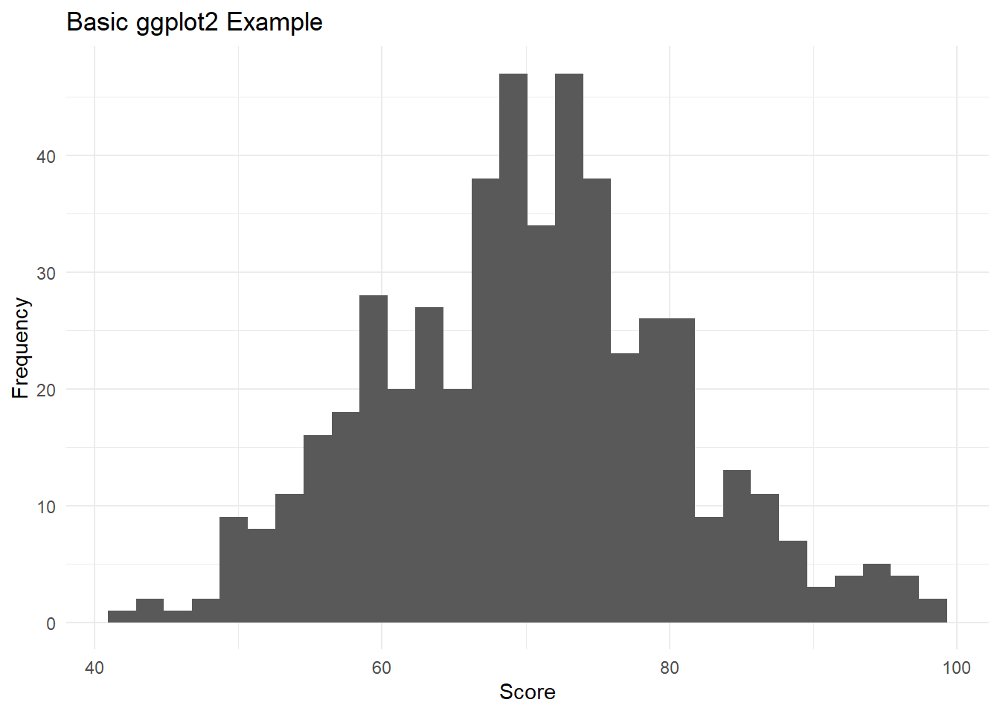
4. Histogram
NoteKiến thức nền tảng (Knowledge Notes)
Là gì? (What?)
Histogram dùng để xem phân phối của một biến định lượng.
Khi nào dùng? (When?)
Dùng khi muốn kiểm tra:
- Dữ liệu có lệch không?
- Có nhiều đỉnh không?
- Có outliers không?
- Phân phối có gần chuẩn không?
fig_hist <- ggplot(viz_data, aes(x = score)) +
geom_histogram(bins = 30) +
labs(
title = "Histogram",
subtitle = "Distribution of score",
x = "Score",
y = "Frequency"
) +
theme_minimal()
fig_hist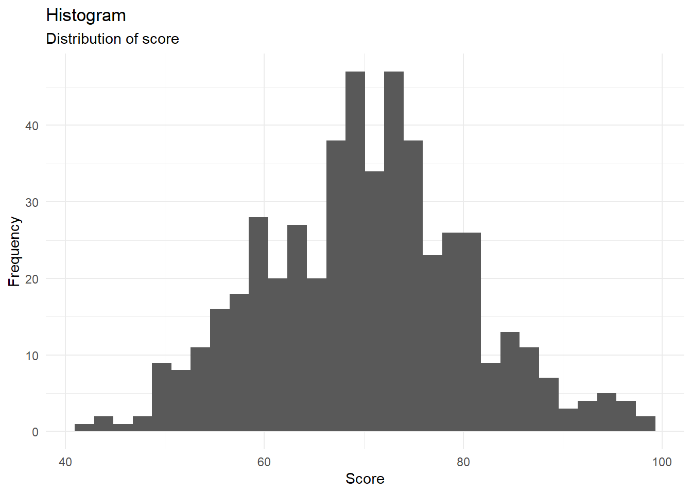
WarningSai lầm thường gặp (Common Mistakes)
Số bins quá ít hoặc quá nhiều có thể làm hình gây hiểu sai.
Hãy thử nhiều giá trị bins.
5. Density plot
NoteKiến thức nền tảng (Knowledge Notes)
Density plot là biểu đồ mật độ, giúp nhìn phân phối mượt hơn histogram.
Dùng khi muốn so sánh phân phối giữa nhiều nhóm.
fig_density <- ggplot(viz_data, aes(x = score, linetype = group)) +
geom_density(linewidth = 1) +
labs(
title = "Density Plot",
subtitle = "Score distribution by group",
x = "Score",
y = "Density",
linetype = "Group"
) +
theme_minimal()
fig_density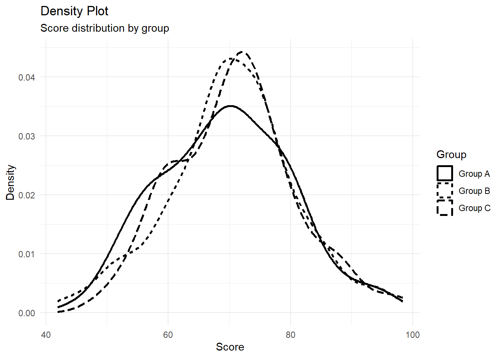
6. Frequency polygon
NoteKiến thức nền tảng (Knowledge Notes)
Frequency polygon tương tự histogram nhưng dùng đường. Nó hữu ích khi so sánh nhiều nhóm.
ggplot(viz_data, aes(x = score, linetype = group)) +
geom_freqpoly(bins = 30, linewidth = 1) +
labs(
title = "Frequency Polygon",
x = "Score",
y = "Count",
linetype = "Group"
) +
theme_minimal()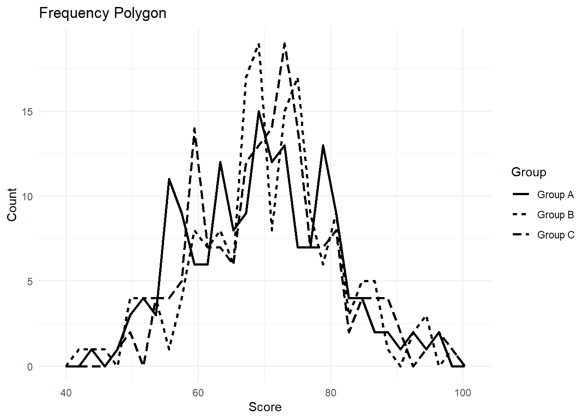
7. Bar chart
NoteKiến thức nền tảng (Knowledge Notes)
Bar chart dùng để biểu diễn số lượng hoặc tỷ lệ của biến phân loại.
fig_bar <- ggplot(viz_data, aes(x = group)) +
geom_bar() +
labs(
title = "Bar Chart",
x = "Group",
y = "Count"
) +
theme_minimal()
fig_bar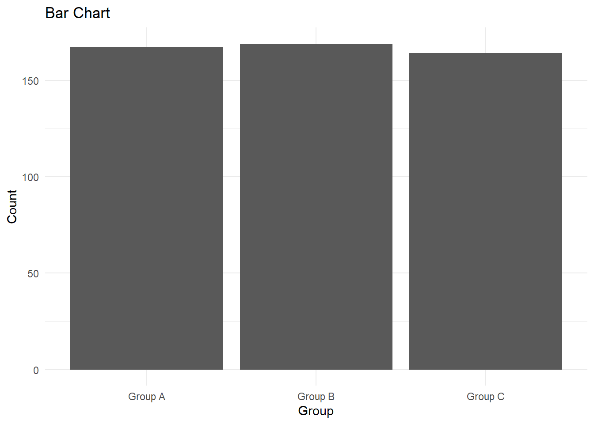
8. Horizontal bar chart
NoteKiến thức nền tảng (Knowledge Notes)
Horizontal bar chart dễ đọc hơn khi tên nhóm dài.
viz_data |>
count(group) |>
ggplot(aes(x = n, y = reorder(group, n))) +
geom_col() +
labs(
title = "Horizontal Bar Chart",
x = "Count",
y = "Group"
) +
theme_minimal()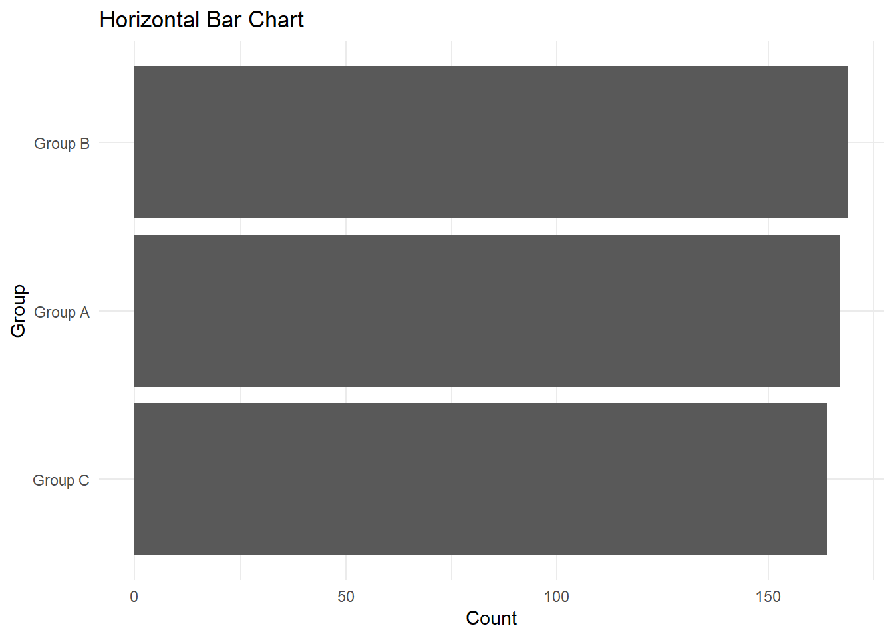
9. Grouped bar chart
NoteKiến thức nền tảng (Knowledge Notes)
Grouped bar chart dùng khi muốn so sánh category theo nhóm phụ.
ggplot(viz_data, aes(x = group, fill = gender)) +
geom_bar(position = "dodge") +
labs(
title = "Grouped Bar Chart",
x = "Group",
y = "Count",
fill = "Gender"
) +
theme_minimal()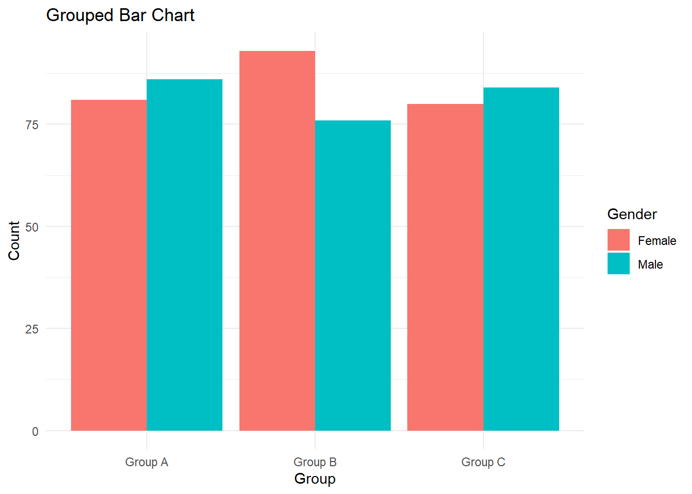
10. Stacked bar chart
NoteKiến thức nền tảng (Knowledge Notes)
Stacked bar chart dùng để xem thành phần trong từng nhóm.
ggplot(viz_data, aes(x = group, fill = gender)) +
geom_bar(position = "stack") +
labs(
title = "Stacked Bar Chart",
x = "Group",
y = "Count",
fill = "Gender"
) +
theme_minimal()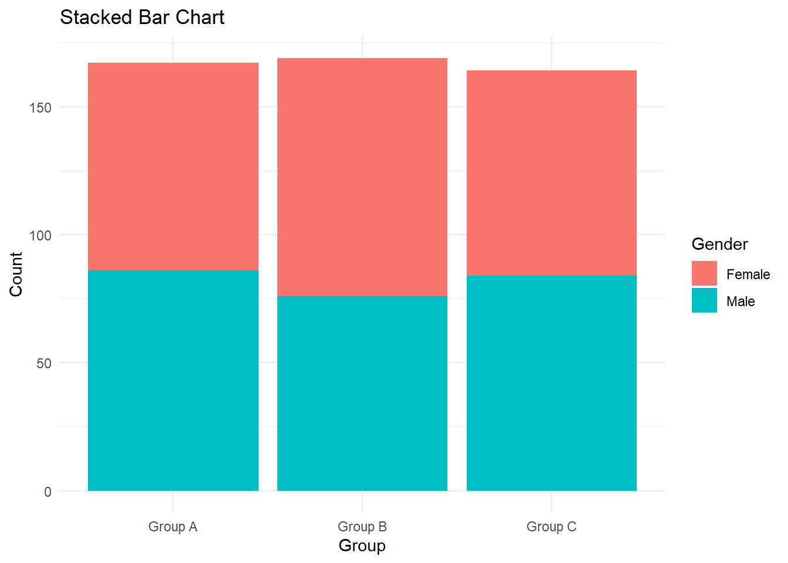
11. 100% stacked bar chart
NoteKiến thức nền tảng (Knowledge Notes)
100% stacked bar chart dùng khi muốn so sánh tỷ lệ thay vì số lượng.
ggplot(viz_data, aes(x = group, fill = gender)) +
geom_bar(position = "fill") +
scale_y_continuous(labels = percent_format()) +
labs(
title = "100% Stacked Bar Chart",
x = "Group",
y = "Percentage",
fill = "Gender"
) +
theme_minimal()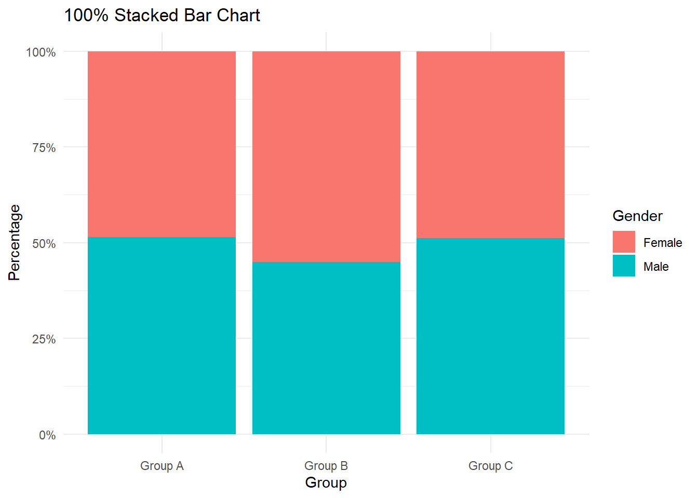
12. Boxplot
NoteKiến thức nền tảng (Knowledge Notes)
Boxplot thể hiện median, IQR và outliers.
Dùng khi so sánh biến định lượng giữa các nhóm.
fig_box <- ggplot(viz_data, aes(x = group, y = score)) +
geom_boxplot() +
labs(
title = "Boxplot",
x = "Group",
y = "Score"
) +
theme_minimal()
fig_box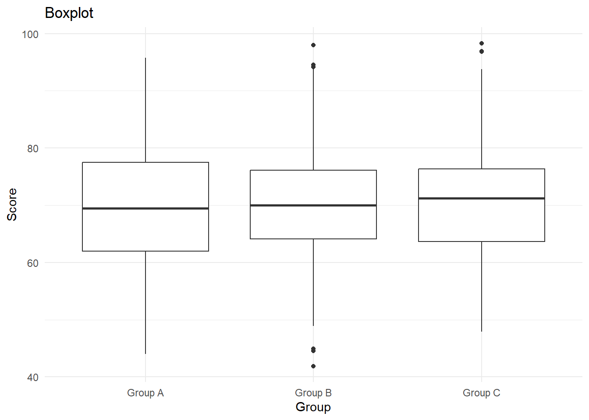
13. Violin plot
NoteKiến thức nền tảng (Knowledge Notes)
Violin plot thể hiện hình dạng phân phối trong từng nhóm.
fig_violin <- ggplot(viz_data, aes(x = group, y = score)) +
geom_violin() +
labs(
title = "Violin Plot",
x = "Group",
y = "Score"
) +
theme_minimal()
fig_violin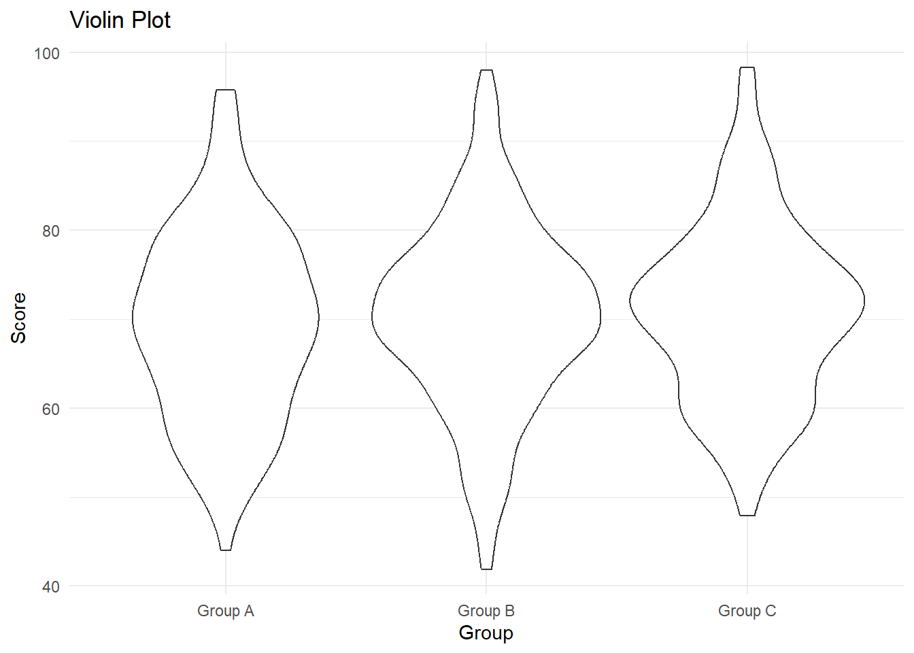
14. Jitter plot
NoteKiến thức nền tảng (Knowledge Notes)
Jitter plot giúp hiển thị từng điểm dữ liệu khi có nhiều điểm trùng nhau.
ggplot(viz_data, aes(x = group, y = score)) +
geom_jitter(width = 0.15, alpha = 0.4) +
labs(
title = "Jitter Plot",
x = "Group",
y = "Score"
) +
theme_minimal()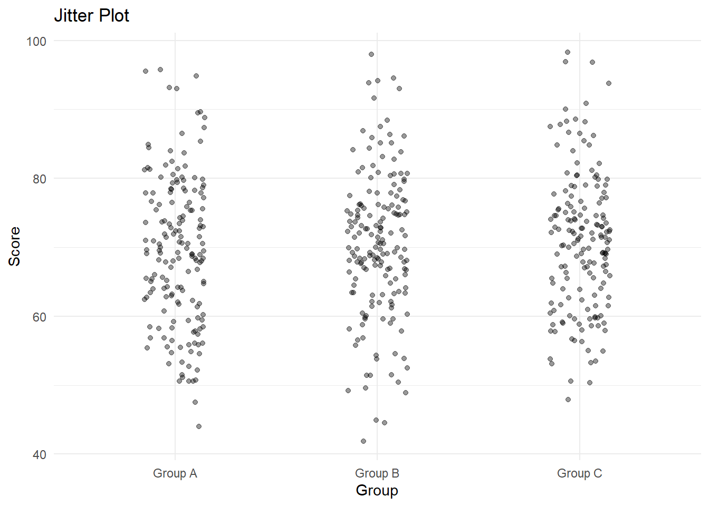
15. Boxplot + jitter
NoteKiến thức nền tảng (Knowledge Notes)
Kết hợp boxplot và jitter giúp vừa thấy tóm tắt vừa thấy dữ liệu thô.
ggplot(viz_data, aes(x = group, y = score)) +
geom_boxplot(outlier.shape = NA) +
geom_jitter(width = 0.15, alpha = 0.25) +
labs(
title = "Boxplot with Jittered Points",
x = "Group",
y = "Score"
) +
theme_minimal()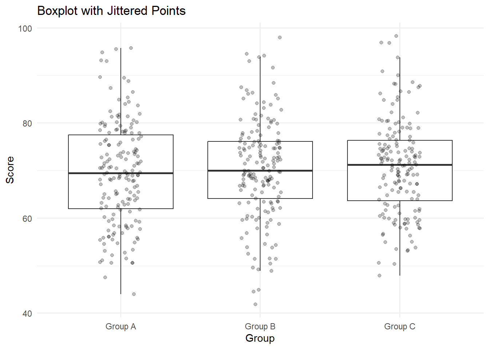
16. Scatter plot
NoteKiến thức nền tảng (Knowledge Notes)
Scatter plot dùng để xem quan hệ giữa hai biến định lượng.
fig_scatter <- ggplot(viz_data, aes(x = study_hours, y = performance)) +
geom_point(alpha = 0.5) +
labs(
title = "Scatter Plot",
x = "Study hours",
y = "Performance"
) +
theme_minimal()
fig_scatter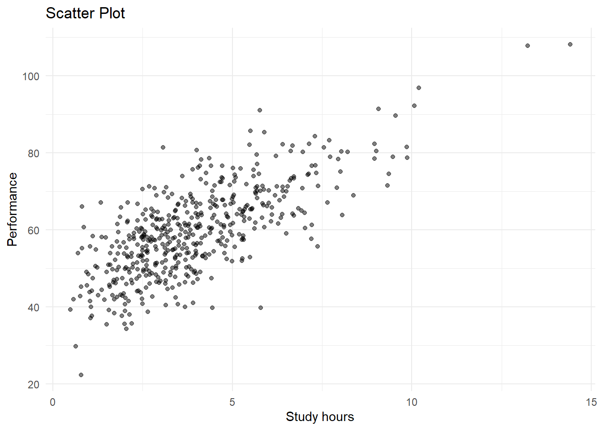
17. Scatter plot with regression line
NoteKiến thức nền tảng (Knowledge Notes)
Thêm geom_smooth(method = "lm") để xem xu hướng tuyến tính.
fig_scatter_lm <- ggplot(viz_data, aes(x = study_hours, y = performance)) +
geom_point(alpha = 0.5) +
geom_smooth(method = "lm", se = TRUE) +
labs(
title = "Scatter Plot with Regression Line",
x = "Study hours",
y = "Performance"
) +
theme_minimal()
fig_scatter_lm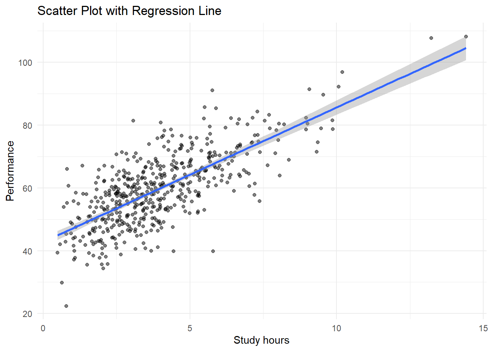
18. Bubble plot
NoteKiến thức nền tảng (Knowledge Notes)
Bubble plot mở rộng scatter plot bằng cách dùng kích thước điểm để thể hiện biến thứ ba.
ggplot(viz_data, aes(x = study_hours, y = performance, size = satisfaction)) +
geom_point(alpha = 0.5) +
labs(
title = "Bubble Plot",
x = "Study hours",
y = "Performance",
size = "Satisfaction"
) +
theme_minimal()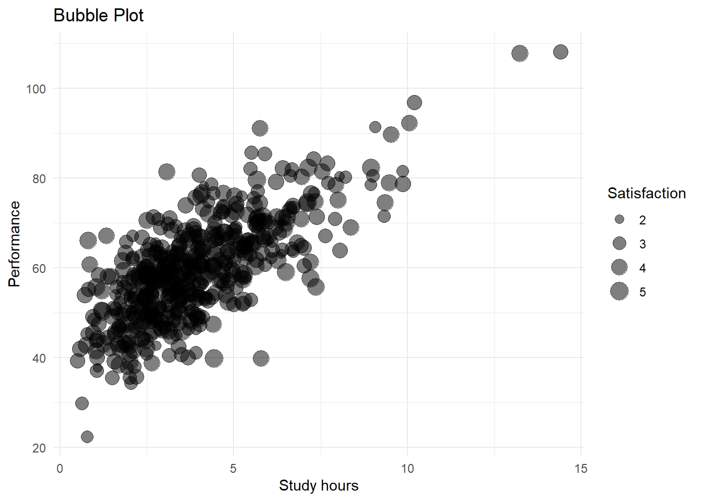
19. Hexbin-like plot bằng stat_bin2d
NoteKiến thức nền tảng (Knowledge Notes)
Khi dữ liệu có rất nhiều điểm, scatter plot có thể bị chồng điểm. stat_bin2d() giúp gom điểm thành ô.
ggplot(viz_data, aes(x = study_hours, y = performance)) +
stat_bin2d(bins = 25) +
labs(
title = "2D Binned Plot",
x = "Study hours",
y = "Performance",
fill = "Count"
) +
theme_minimal()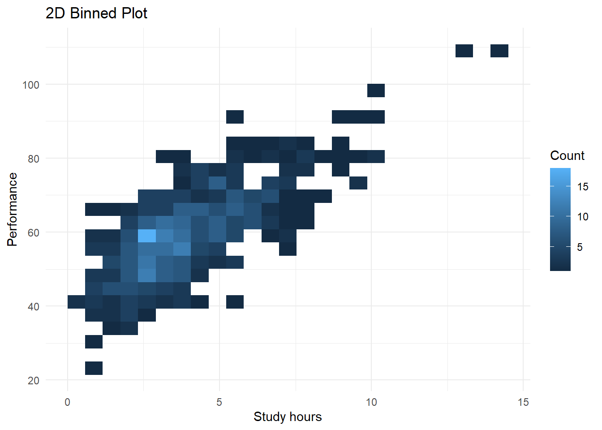
20. Line plot
NoteKiến thức nền tảng (Knowledge Notes)
Line plot dùng cho dữ liệu theo thời gian.
fig_line <- ggplot(time_data, aes(x = month, y = value, linetype = group)) +
geom_line(linewidth = 1) +
geom_point(size = 2) +
labs(
title = "Line Plot",
x = "Month",
y = "Value",
linetype = "Group"
) +
theme_minimal()
fig_line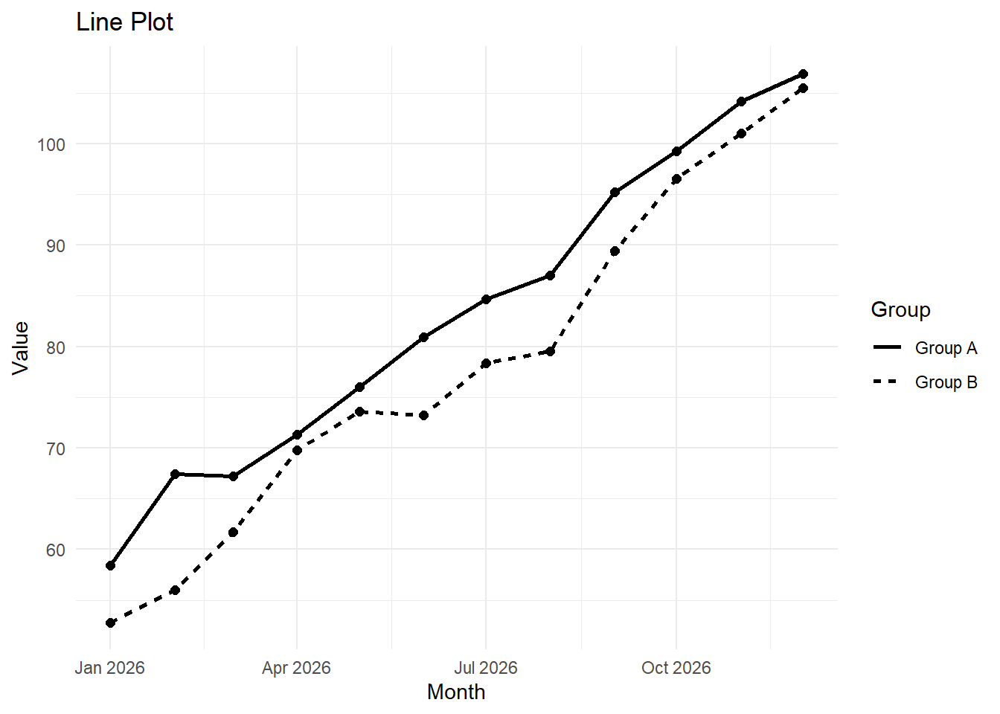
21. Area plot
NoteKiến thức nền tảng (Knowledge Notes)
Area plot nhấn mạnh độ lớn tích lũy hoặc xu hướng theo thời gian.
ggplot(time_data, aes(x = month, y = value, fill = group)) +
geom_area(alpha = 0.5, position = "identity") +
labs(
title = "Area Plot",
x = "Month",
y = "Value",
fill = "Group"
) +
theme_minimal()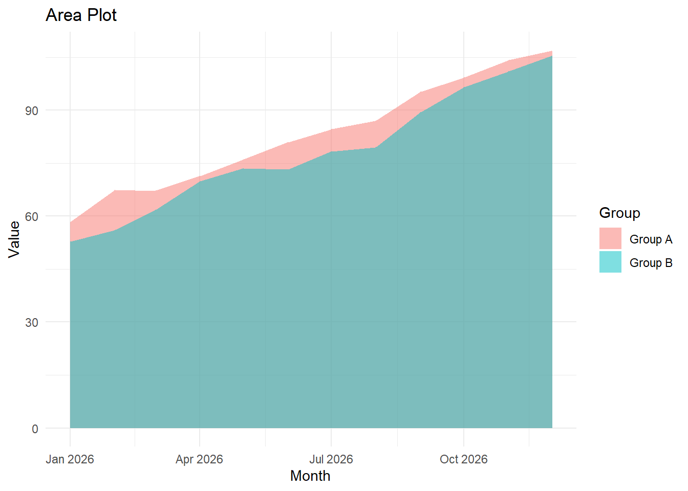
22. Heatmap
NoteKiến thức nền tảng (Knowledge Notes)
Heatmap dùng để biểu diễn ma trận hoặc bảng hai chiều.
heatmap_data <- viz_data |>
mutate(
score_group = cut(score, breaks = 5),
stress_group = cut(stress, breaks = 5)
) |>
count(score_group, stress_group)
ggplot(heatmap_data, aes(x = score_group, y = stress_group, fill = n)) +
geom_tile() +
labs(
title = "Heatmap",
x = "Score group",
y = "Stress group",
fill = "Count"
) +
theme_minimal() +
theme(axis.text.x = element_text(angle = 45, hjust = 1))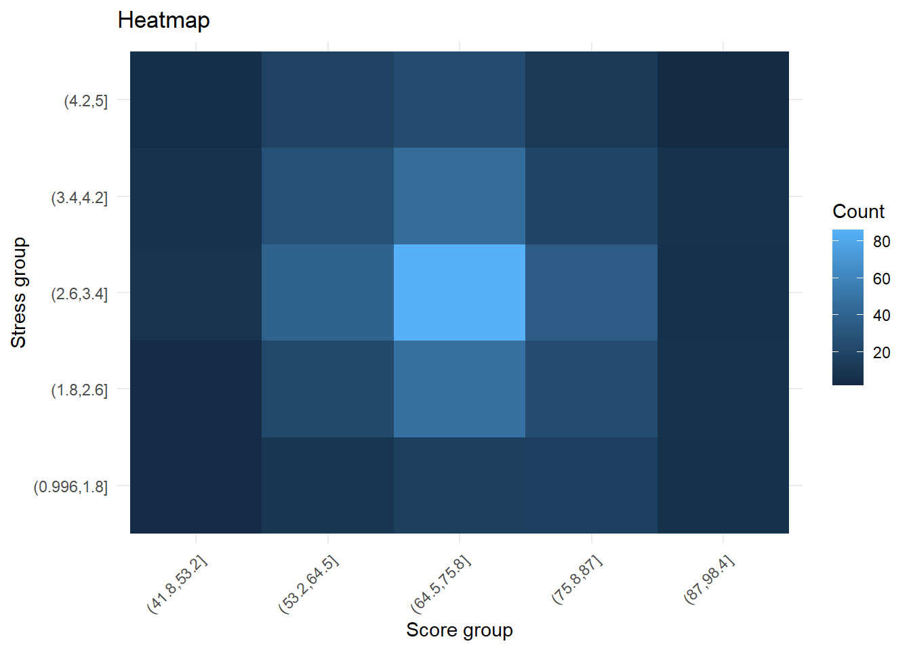
23. Correlation heatmap
NoteKiến thức nền tảng (Knowledge Notes)
Correlation heatmap giúp xem tương quan giữa nhiều biến định lượng.
cor_matrix <- cor(matrix_data, use = "pairwise.complete.obs")
cor_long <- as.data.frame(as.table(cor_matrix)) |>
rename(
variable_1 = Var1,
variable_2 = Var2,
correlation = Freq
)
fig_cor_heatmap <- ggplot(
cor_long,
aes(x = variable_1, y = variable_2, fill = correlation)
) +
geom_tile() +
geom_text(aes(label = round(correlation, 2)), size = 3) +
labs(
title = "Correlation Heatmap",
x = NULL,
y = NULL,
fill = "r"
) +
theme_minimal() +
theme(axis.text.x = element_text(angle = 45, hjust = 1))
fig_cor_heatmap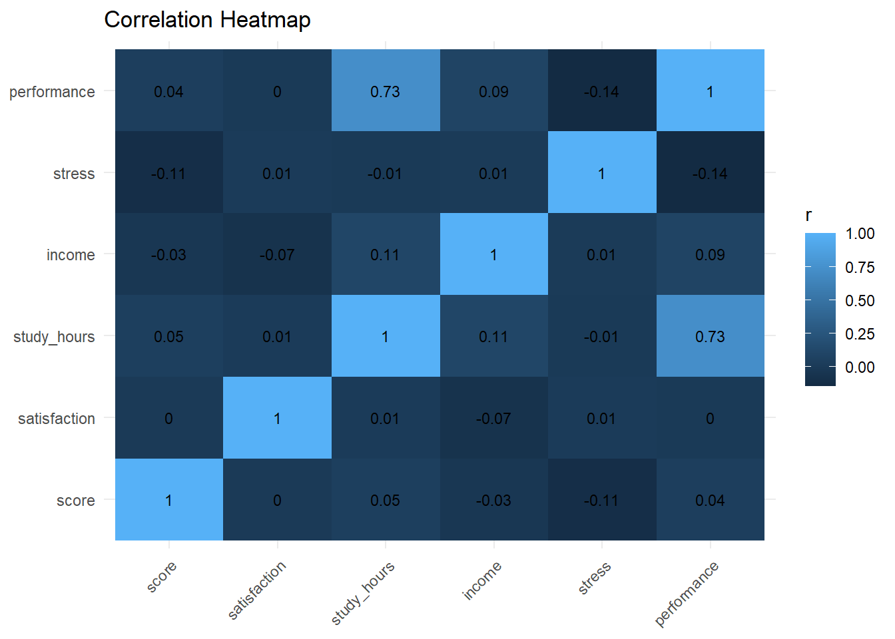
24. Pair plot
NoteKiến thức nền tảng (Knowledge Notes)
Pair plot giúp xem quan hệ giữa nhiều biến định lượng cùng lúc.
Dùng package GGally nếu đã cài.
if (requireNamespace("GGally", quietly = TRUE)) {
GGally::ggpairs(matrix_data)
}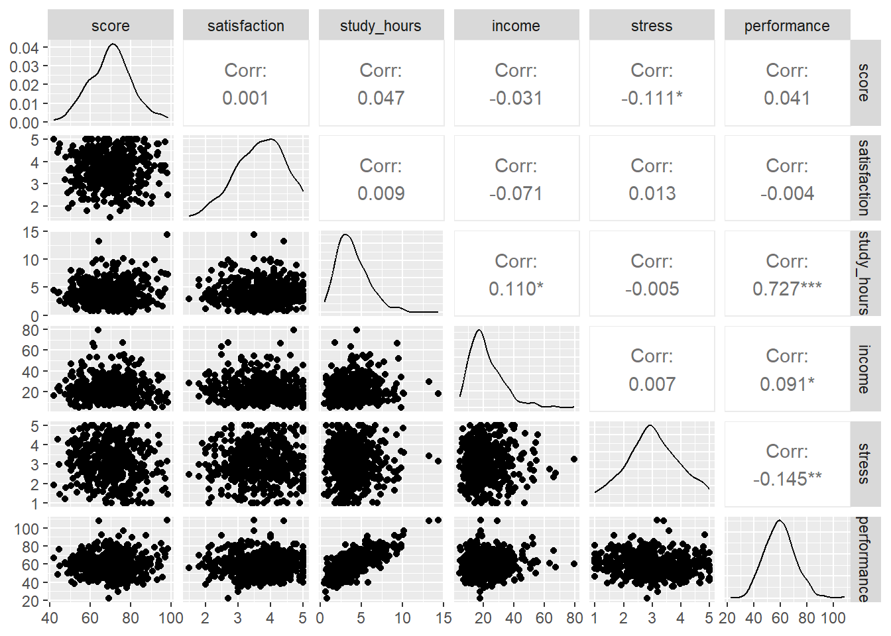
25. PCA plot
NoteKiến thức nền tảng (Knowledge Notes)
PCA plot dùng để giảm chiều dữ liệu và xem pattern tổng thể giữa các quan sát.
pca_result <- prcomp(
matrix_data |> scale(),
center = TRUE,
scale. = TRUE
)
pca_scores <- as_tibble(pca_result$x[, 1:2]) |>
mutate(group = viz_data$group)
ggplot(pca_scores, aes(x = PC1, y = PC2, shape = group)) +
geom_point(alpha = 0.6) +
labs(
title = "PCA Plot",
x = "PC1",
y = "PC2",
shape = "Group"
) +
theme_minimal()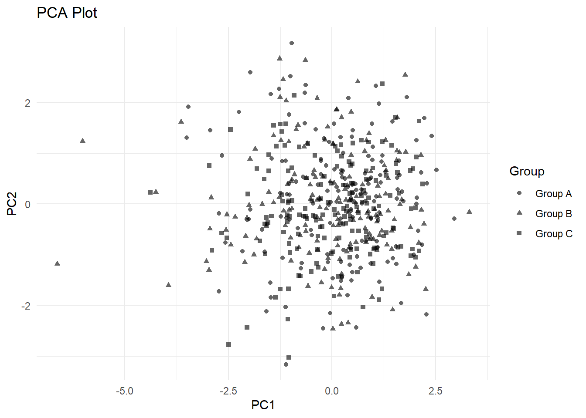
26. PCA biplot
NoteKiến thức nền tảng (Knowledge Notes)
Biplot thể hiện cả quan sát và hướng đóng góp của biến.
Dùng factoextra nếu đã cài.
if (requireNamespace("factoextra", quietly = TRUE)) {
factoextra::fviz_pca_biplot(
pca_result,
repel = TRUE
)
}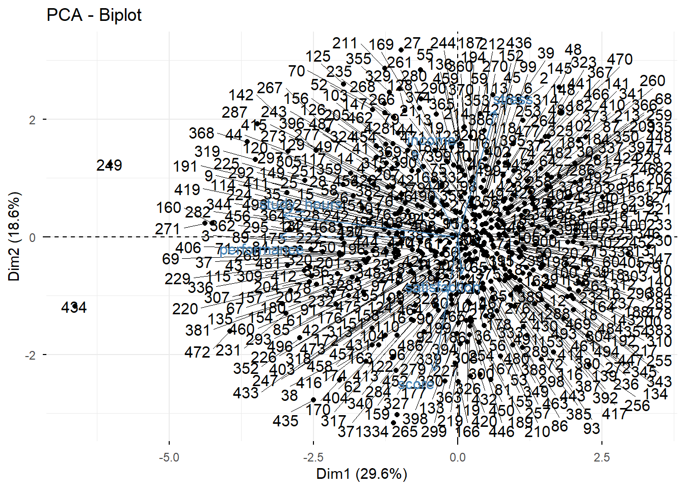
27. Volcano plot
NoteKiến thức nền tảng (Knowledge Notes)
Volcano plot thường dùng trong phân tích khoa học để hiển thị effect size và statistical significance.
Ở đây ta tạo ví dụ minh họa public.
set.seed(123)
volcano_data <- tibble(
feature = paste0("Feature_", 1:300),
log2_fold_change = rnorm(300, 0, 1),
p_value = runif(300, 0.0001, 1)
) |>
mutate(
neg_log10_p = -log10(p_value),
significant = p_value < 0.05 & abs(log2_fold_change) > 1
)
ggplot(
volcano_data,
aes(x = log2_fold_change, y = neg_log10_p, shape = significant)
) +
geom_point(alpha = 0.7) +
geom_vline(xintercept = c(-1, 1), linetype = "dashed") +
geom_hline(yintercept = -log10(0.05), linetype = "dashed") +
labs(
title = "Volcano Plot",
x = "Log2 fold change",
y = "-log10(p-value)",
shape = "Significant"
) +
theme_minimal()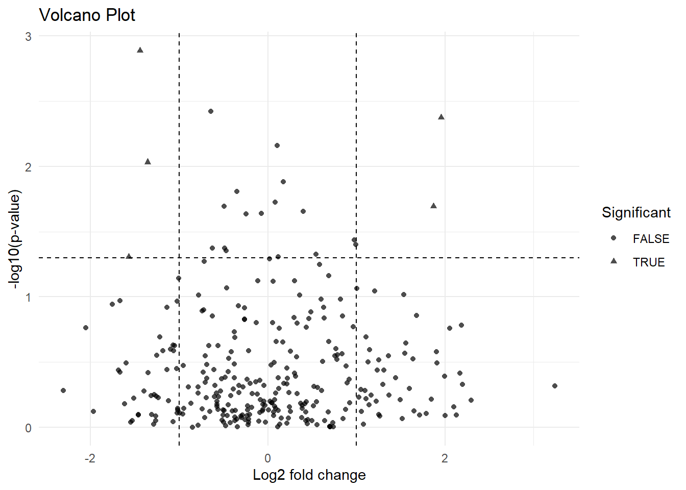
28. Lollipop chart
NoteKiến thức nền tảng (Knowledge Notes)
Lollipop chart là biến thể gọn của bar chart, phù hợp khi muốn xếp hạng.
rank_data <- viz_data |>
group_by(group) |>
summarise(mean_score = mean(score), .groups = "drop")
ggplot(rank_data, aes(x = mean_score, y = reorder(group, mean_score))) +
geom_segment(aes(x = 0, xend = mean_score, yend = group)) +
geom_point(size = 4) +
labs(
title = "Lollipop Chart",
x = "Mean score",
y = "Group"
) +
theme_minimal()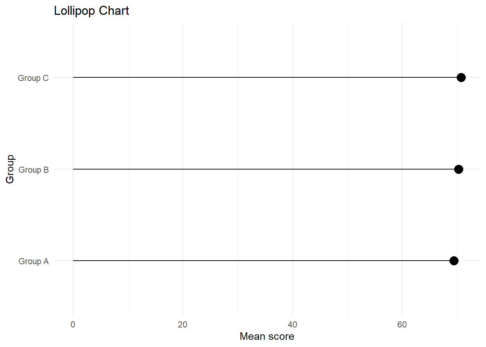
29. Cleveland dot plot
NoteKiến thức nền tảng (Knowledge Notes)
Cleveland dot plot thường dễ đọc hơn bar chart khi so sánh nhiều category.
ggplot(rank_data, aes(x = mean_score, y = reorder(group, mean_score))) +
geom_point(size = 4) +
labs(
title = "Cleveland Dot Plot",
x = "Mean score",
y = "Group"
) +
theme_minimal()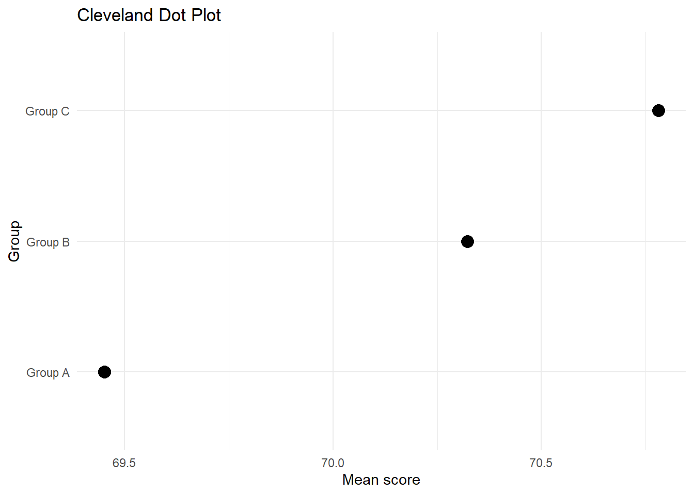
30. Alluvial plot
NoteKiến thức nền tảng (Knowledge Notes)
Alluvial plot dùng để biểu diễn dòng chảy giữa các nhóm phân loại.
Dùng package ggalluvial nếu đã cài.
if (requireNamespace("ggalluvial", quietly = TRUE)) {
alluvial_data <- viz_data |>
mutate(
satisfaction_group = case_when(
satisfaction < 3 ~ "Low",
satisfaction < 4 ~ "Medium",
TRUE ~ "High"
),
adoption = if_else(adopted == 1, "Adopted", "Not adopted")
) |>
count(group, satisfaction_group, adoption)
ggplot(
alluvial_data,
aes(
axis1 = group,
axis2 = satisfaction_group,
axis3 = adoption,
y = n
)
) +
ggalluvial::geom_alluvium(aes(fill = group), width = 1/12) +
ggalluvial::geom_stratum(width = 1/12) +
ggalluvial::stat_stratum(
geom = "text",
aes(label = after_stat(stratum)),
size = 3
) +
scale_x_discrete(
limits = c("Group", "Satisfaction", "Adoption"),
expand = c(.05, .05)
) +
labs(
title = "Alluvial Plot",
y = "Count"
) +
theme_minimal()
}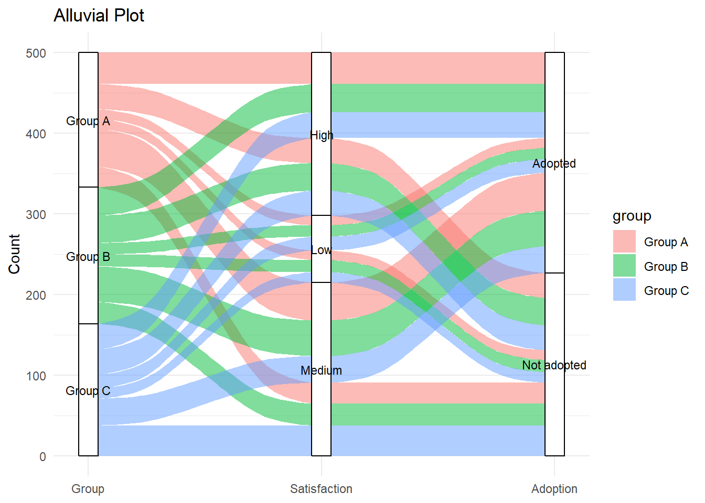
31. Facet plot
NoteKiến thức nền tảng (Knowledge Notes)
Facet giúp chia biểu đồ thành nhiều panel theo nhóm.
ggplot(viz_data, aes(x = study_hours, y = performance)) +
geom_point(alpha = 0.5) +
geom_smooth(method = "lm", se = FALSE) +
facet_wrap(~ group) +
labs(
title = "Facet Plot",
x = "Study hours",
y = "Performance"
) +
theme_minimal()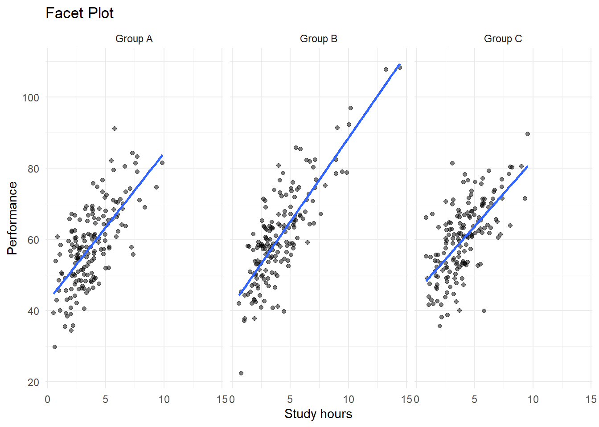
32. Publication-ready layout
NoteKiến thức nền tảng (Knowledge Notes)
patchwork giúp ghép nhiều hình thành layout phù hợp báo cáo.
(fig_hist + fig_density) /
(fig_box + fig_scatter_lm)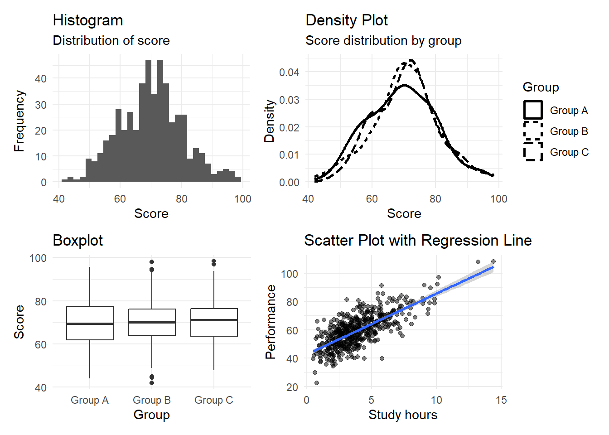
33. Checklist biểu đồ học thuật
Một hình tốt nên có:
| Thành phần | Nên có |
|---|---|
| Tiêu đề rõ | Có |
| Subtitle nếu cần | Có |
| Nhãn trục rõ | Có |
| Đơn vị đo | Có |
| Legend dễ hiểu | Có |
| Không quá nhiều màu | Có |
| Font dễ đọc | Có |
| Dữ liệu phù hợp biểu đồ | Có |
| Diễn giải trong text | Có |
34. Viết diễn giải hình
NoteKiến thức nền tảng (Knowledge Notes)
Khi viết kết quả từ hình, cần mô tả pattern chính mà không diễn giải quá mức.
Template phân phối
Figure 1 shows that the distribution of scores was approximately symmetric, with most observations concentrated around the center of the scale.Template so sánh nhóm
The boxplot indicates differences in score distributions across groups, with Group A showing a higher median score than the other groups.Template quan hệ hai biến
The scatter plot suggests a positive association between study hours and performance, although the spread of points indicates substantial individual variation.Template heatmap
The correlation heatmap shows that performance was positively correlated with study hours and negatively correlated with stress.
WarningSai lầm thường gặp (Common Mistakes)
Không nên viết:
The figure proves that X causes Y.Nên viết:
The figure suggests an association between X and Y.35. Bài tập thực hành
ImportantBài tập thực hành (Practice Exercise)
Hãy tạo các hình sau:
- Histogram
- Density plot
- Bar chart
- Grouped bar chart
- Boxplot
- Violin plot
- Scatter plot
- Scatter plot with regression line
- Line plot
- Area plot
- Heatmap
- Correlation heatmap
- PCA plot
- Volcano plot
- Alluvial plot nếu package đã cài
- Một layout bằng patchwork
36. Thử thách
WarningThử thách (Challenge)
Tình huống
Bạn cần chuẩn bị 4 hình cho một báo cáo nghiên cứu:
- Mô tả phân phối outcome
- So sánh outcome giữa nhóm
- Trình bày mối quan hệ giữa predictor và outcome
- Tóm tắt correlation giữa nhiều biến
Câu hỏi
Bạn chọn loại biểu đồ nào và vì sao?
TipGợi ý trả lời (Suggested Solution)
Một câu trả lời tốt:
- Histogram hoặc density plot cho phân phối.
- Boxplot hoặc violin plot cho so sánh nhóm.
- Scatter plot với regression line cho quan hệ hai biến.
- Correlation heatmap cho nhiều biến.
37. Dự án nhỏ
ImportantDự án nhỏ (Mini Project)
Chủ đề
Advanced Visualization Portfolio
Sản phẩm đầu ra
Học viên cần tạo:
Advanced_Visualization_Portfolio.htmlNội dung báo cáo
- Distribution plots
- Comparison plots
- Relationship plots
- Time-series plots
- Matrix plots
- Scientific plots
- Flow plot
- Publication-ready layout
- Figure interpretation
- Visualization checklist
38. Điểm cần ghi nhớ
- Biểu đồ phải phục vụ câu hỏi nghiên cứu.
- Histogram và density plot dùng cho phân phối.
- Boxplot và violin plot dùng để so sánh phân phối giữa nhóm.
- Scatter plot dùng cho quan hệ hai biến định lượng.
- Line plot dùng cho dữ liệu thời gian.
- Heatmap dùng cho ma trận hoặc bảng hai chiều.
- PCA plot dùng để xem pattern nhiều biến.
- Volcano plot dùng để kết hợp effect size và p-value.
- Không nên dùng hình quá phức tạp nếu người đọc không cần.
- Một hình tốt cần có nhãn rõ, bố cục sạch và diễn giải thận trọng.
39. Bước tiếp theo
NoteBước tiếp theo (What Next?)
Sau khi hoàn thành phần này, học viên nên:
- Biết chọn biểu đồ theo loại câu hỏi.
- Biết viết code
ggplot2cho nhiều loại hình. - Biết tạo figure layout bằng
patchwork. - Biết viết diễn giải hình cho báo cáo học thuật.
- Chuyển sang:
Trong phần tiếp theo, chúng ta sẽ tổng hợp toàn bộ phần Advanced Analytics thành bộ công cụ chọn phương pháp, viết kết quả và chuẩn bị báo cáo nghiên cứu.